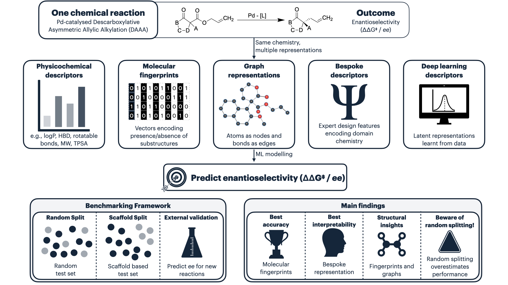
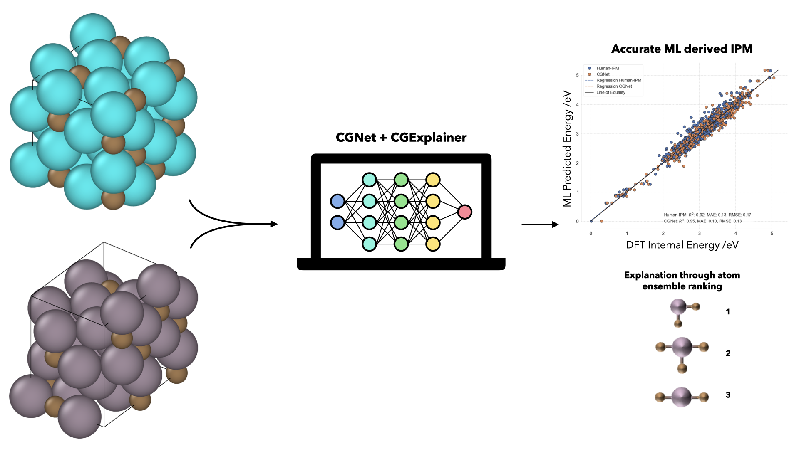
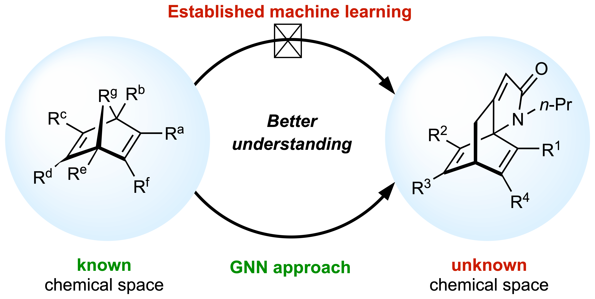
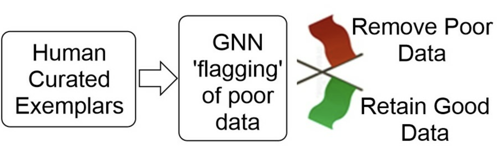

Peer-reviewed articles and preprints in AI for chemistry and materials science.

Journal of Cheminformatics · 2026Eduardo Aguilar-Bejarano, et al.
Read ArticleJ. W. Roberts, A. Kotowska, Eduardo Aguilar-Bejarano, et al.
ML model — with the MIT Anderson Lab.
Read PreprintEduardo Aguilar-Bejarano, Daniel Lea, Karthikeyan Sivakumar, Jimiama M. Mase, Reza Omidvar, Ruizhe Li, Troy Kettle, James Mitchell-White, Morgan R. Alexander, David A. Winkler, Grazziela Figueredo
Read Article
Physical Chemistry Chemical Physics · 2025Eduardo Aguilar-Bejarano, Luis Arrieta, Mauricio Gutiérrez, Ender Özcan, Simon Woodward, Grazziela Figueredo, J. Ignacio Borge-Durán
Read Article
iScience (Cell Press) · 2025Eduardo Aguilar-Bejarano, Ender Özcan, Raja K. Rit, Hon Wai Lam, Simon Woodward, Grazziela Figueredo
Read Article
Molecules (MDPI) · 2025Eduardo Aguilar-Bejarano, Viraj Deorukhkar, Simon Woodward
Read Article